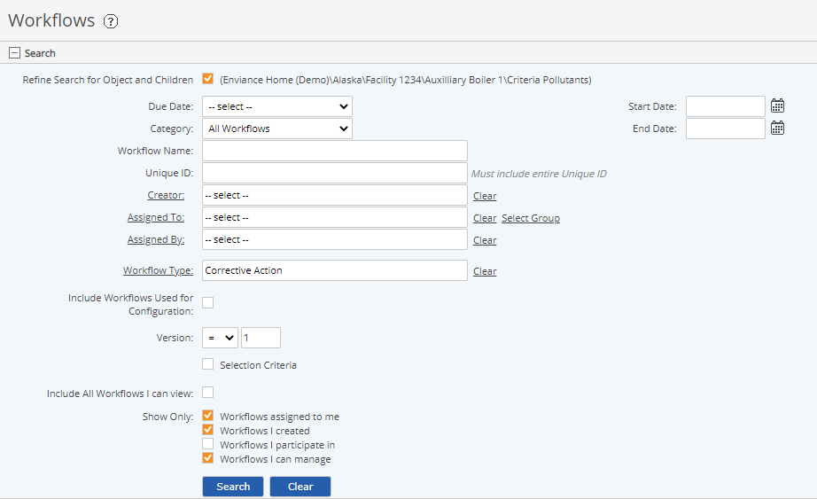

In the Workflow Manager, accessed through the Tasks and Workflows page, you can view all workflows to which you have access and search for workflows by various criteria.
To access the Workflow Manager page:
Select Tasks and Workflows from the menu.
Workflow options available to you depend on your permissions.
Workflows are displayed according to the last search criteria used. If you have not performed any searches, the initial default view shows:

To search for other workflows, set the search criteria in the Search pane to apply the appropriate filter. See Search Workflows.
You may also view workflows related to a specific object in the System Model by accessing the Workflows option on the right-click menu for an object. See View Object-Related Workflows.